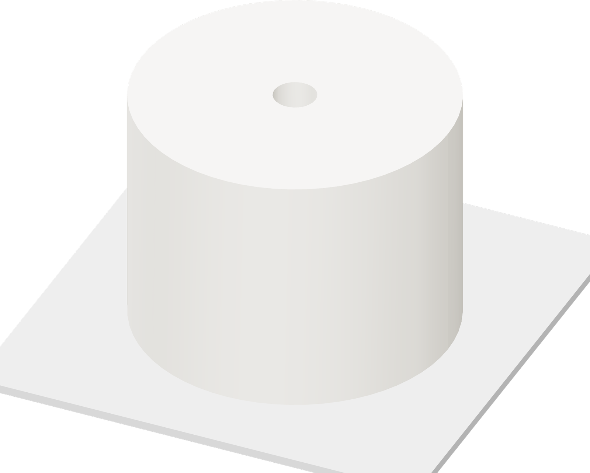

Set up Mark2
The selected H2C recipe uses its fixed right nozzle and a glued Engineering plate.

| Right nozzle | right fixed hardened standard-flow 0.4 mm |
| Filament feed | Polymaker drybox · external right slot 255 |
| Send tile | Ext ASA-AERO R |
| Plate / trim | Engineering, Bambu liquid glue · +0.04 mm user trim |
- With the printer cool, confirm the right hardened standard-flow 0.4 mm nozzle and matching printer setup.
- Wash the Engineering plate with dish detergent and warm water. Rinse, dry, and apply a thin even coat of the owned Bambu liquid glue.
- Set one RC62 and a soft brush beside the printer. Keep the enclosure closed during printing and run the shop ventilation.
Recipe scope
The recorded recipe is a trial process. It does not establish foam density, completed buoyancy or pressure life.